1994
Teacher Recognition Award
The published record gives the award and the year. It does not name the body that conferred it, so neither does this page.
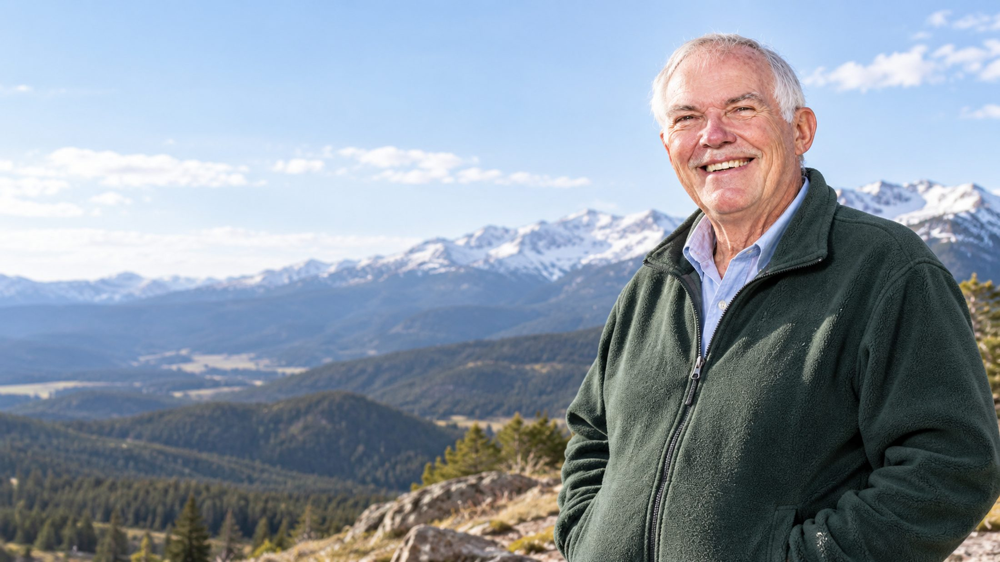
Physical geography · Hydrology · Climatology
The weather came first, as a hobby. The career came after it, and for twenty four years the two were the same work. He retired from the department in 2004. The weather habit did not retire with it.
The short version
William C. Rense taught geography and earth science at Shippensburg University of Pennsylvania from 1980 until his retirement in 2004.
Before Shippensburg he spent several years teaching at the University of Louisianna at Lafayette. His field is physical geography, and inside it hydrology and climatology are where he has spent his attention. He came to weather first as a hobby, and kept it.
He followed his father, who was also a professor, into higher education. Alongside his teaching he served three years as chairman of the promotion committee on campus. He names the completion of his doctorate as the achievement that has mattered most to him, and credits his advancement to the independent pursuit of his own interests, to hard work, and to luck.
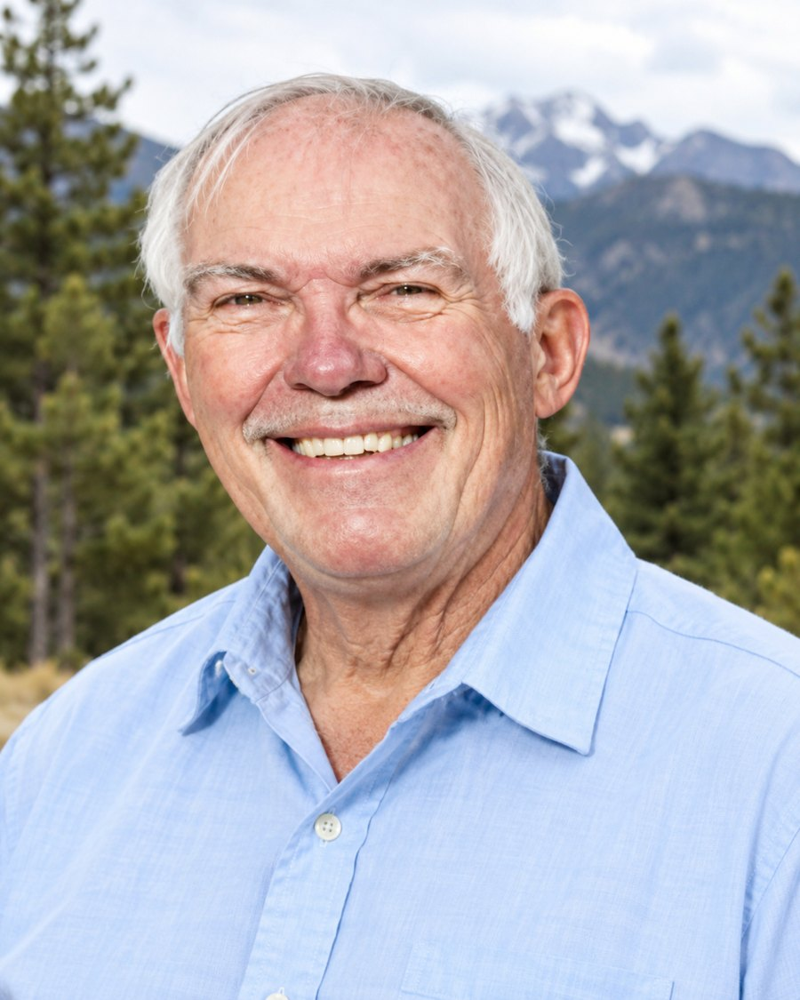
The record
Everything below is taken from his own published material. Where that material gives no year, no year is printed here.
1980 to 2004
Twenty four years teaching in the Department of Geography and Earth Science, from his arrival in 1980 until he retired in 2004.
Before 1980
Several years of teaching before the move to Pennsylvania.
Three years
Service to the campus outside his own classroom, chairing the committee for three years.
Doctorate
He cites completing the doctorate as his most significant achievement.
Degrees
Both from the University of Southwestern Louisiana.
In the field
Instrument shelters, stream channels, snowpack, a map and a room full of students. The two halves of the subject he taught.
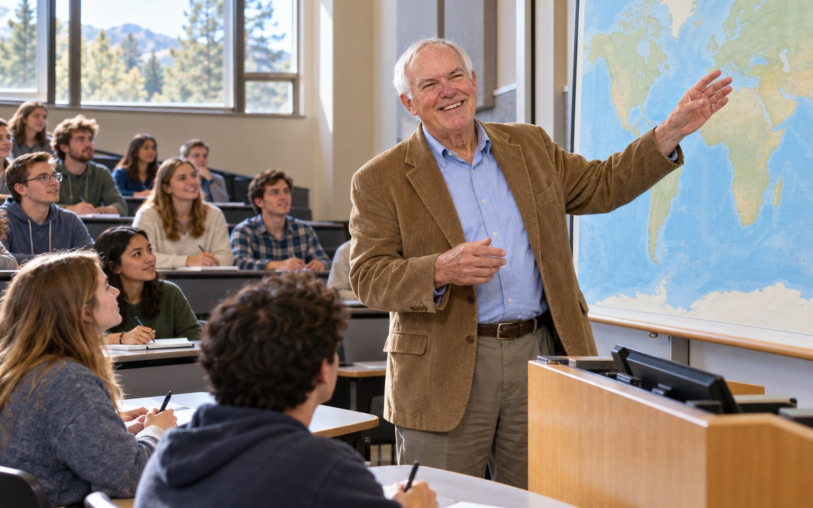
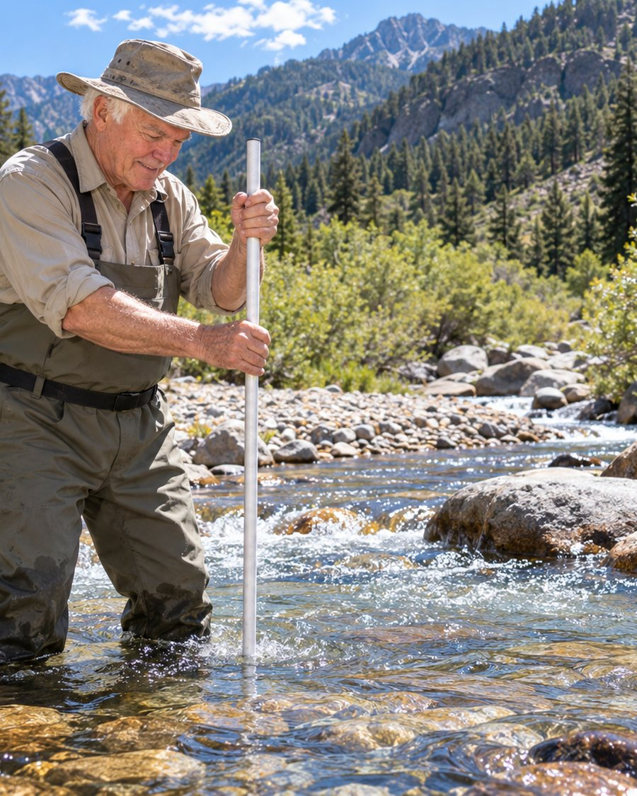
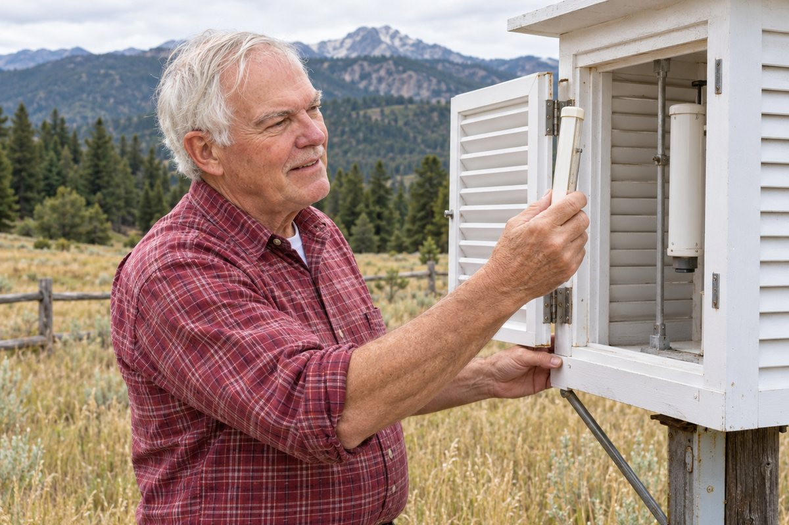
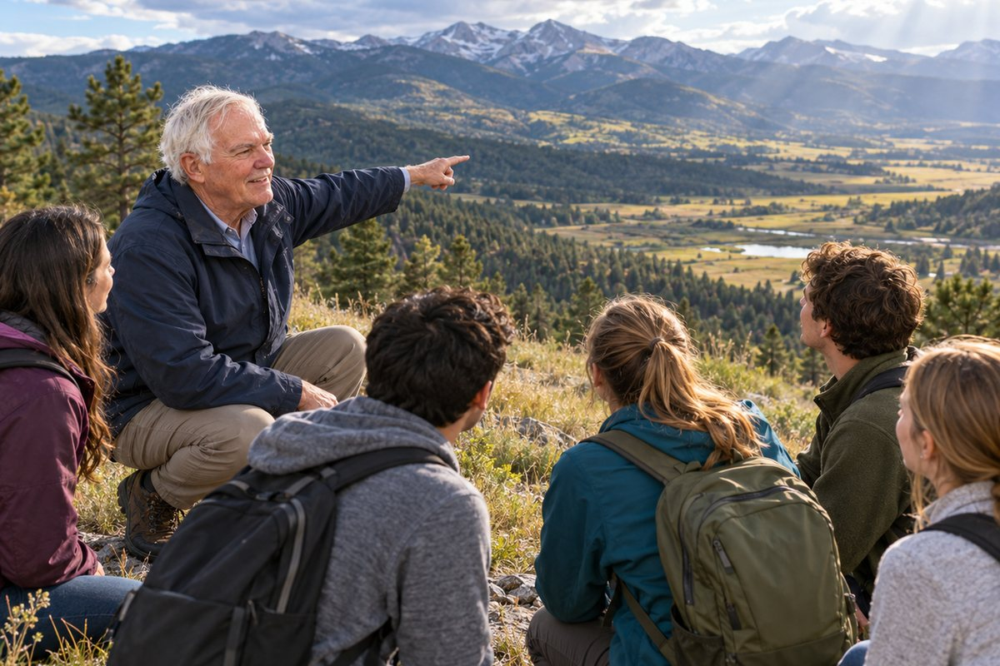
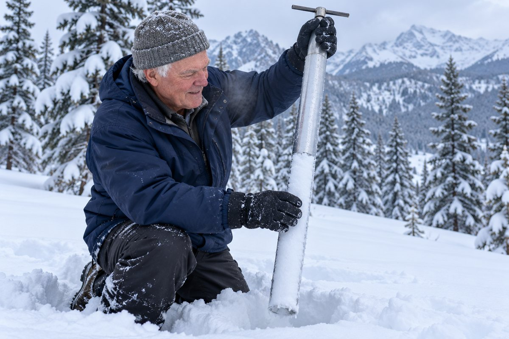
On the page
The teaching ended in 2004. The writing did not.
His published work runs to articles in peer reviewed scholarly journals and presentations at many professional conferences. He wrote the entry on Pennsylvania for the World Book Encyclopedia.
From Colorado he submits a monthly article on weather topics to the Allenspark Wind, a local newspaper. It is the same habit that started the career, carried on after it.
The subject arrived as a hobby, became a profession for twenty four years, and then went back to being a hobby. It never actually stopped.
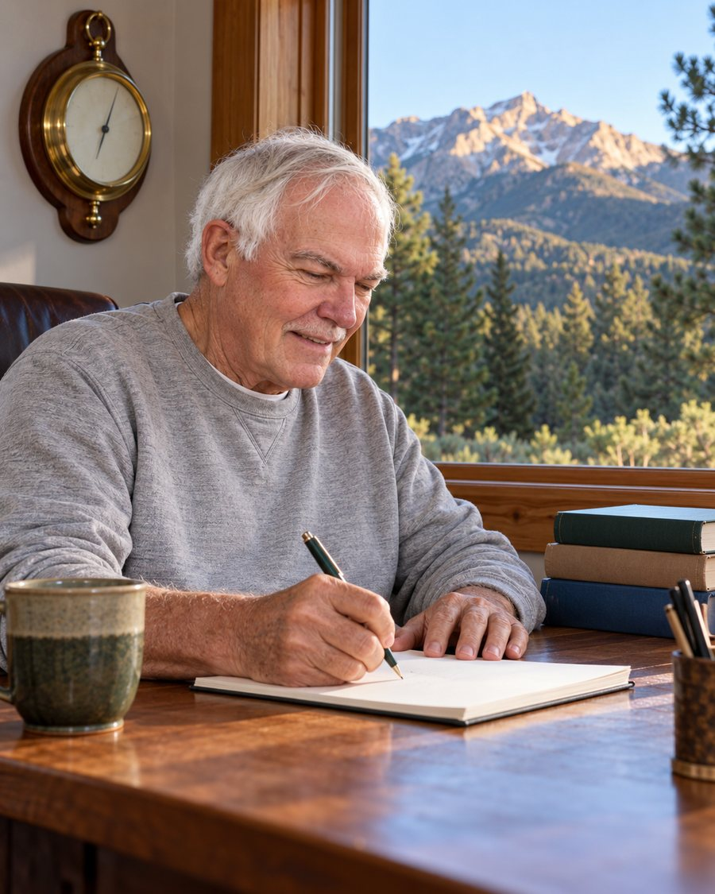
Recognition
Where the record does not name the awarding body, this page does not guess at one.
1994
The published record gives the award and the year. It does not name the body that conferred it, so neither does this page.
2007
Conferred by the Pennsylvania Geographical Society, whose own list of past award winners records him as Dr. William C. Rense, Retired, Department of Geography and Earth Science, Shippensburg University.
Societies
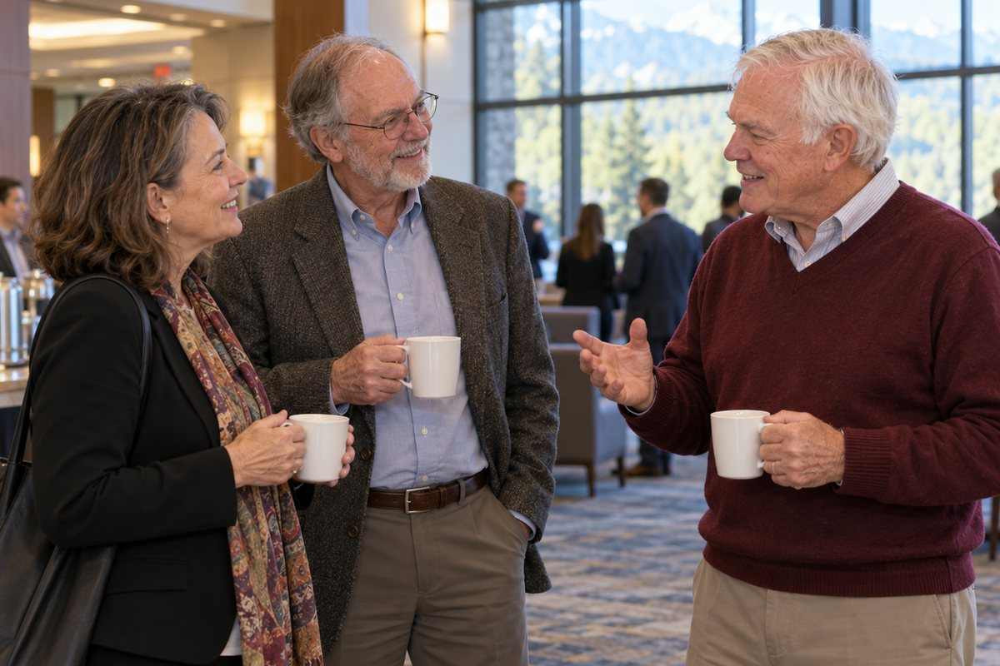
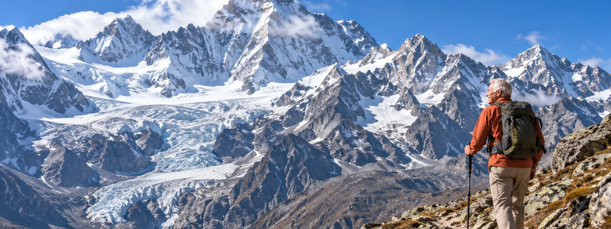
Away from the department
He has trekked in both ranges and names those treks among the things that have inspired him. In retirement in Colorado he looks forward to more travel, and to the opera.
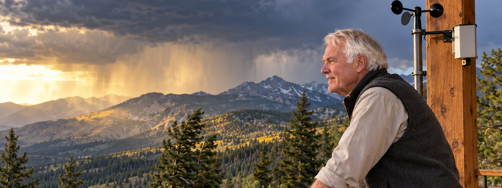
Now
Retired from the department since 2004. Still watching the sky, and still writing a column about it once a month.